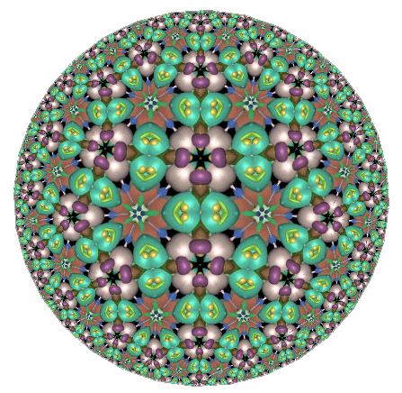

This is a kaleidoscope in the Poincare model of the hyperbolic plane. It is made from flat and spherical mirrors, which form tiling of the hyperbolic plane.
Hyperbolic plane itself moves from left to right. It makes easy to see equivalence of all tiles. Every time you click on the image above, kaleidoscope with new random texture will be shown.
The kaleidoscope needs WebGL support in the browser. If you don't have WebGL, you can see few screen shots of the kaleidoscope.